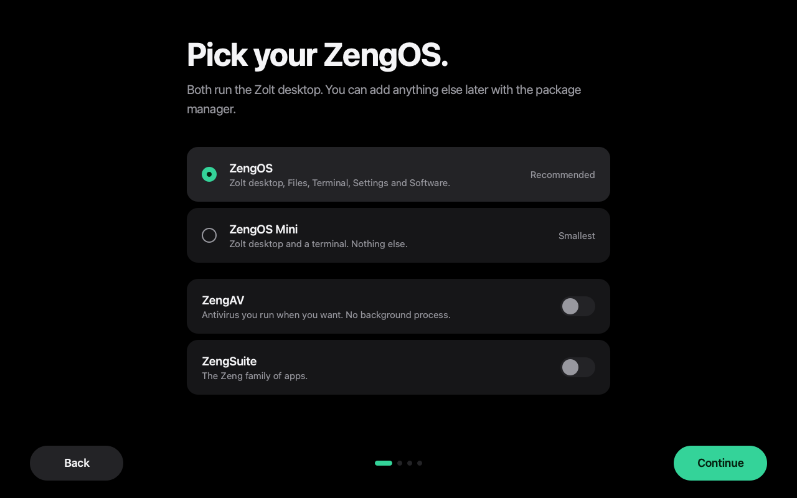
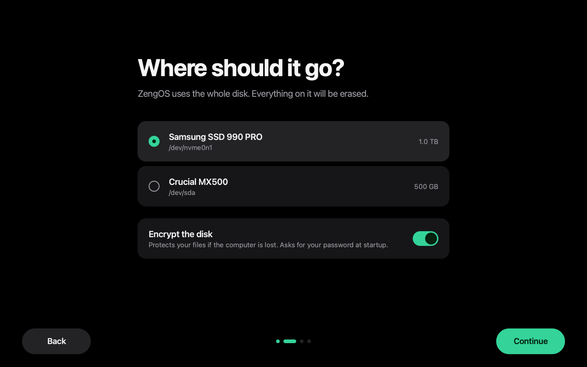
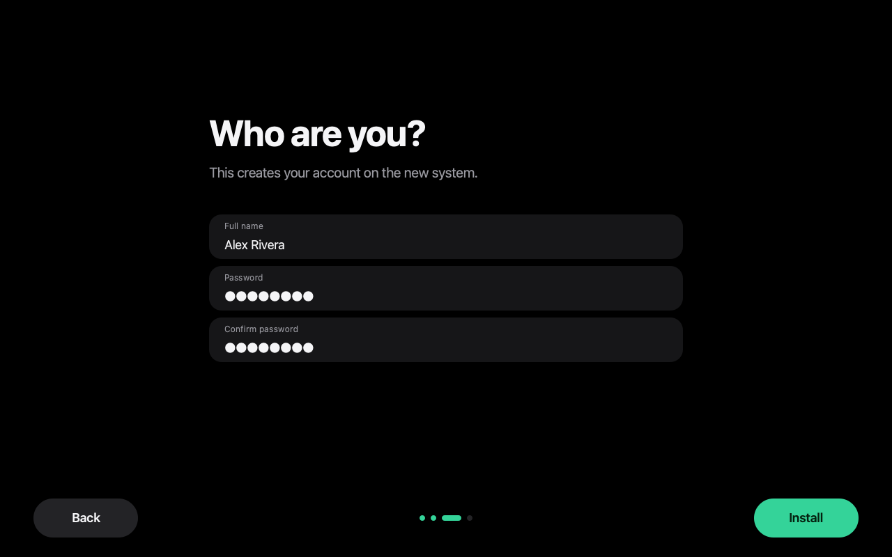
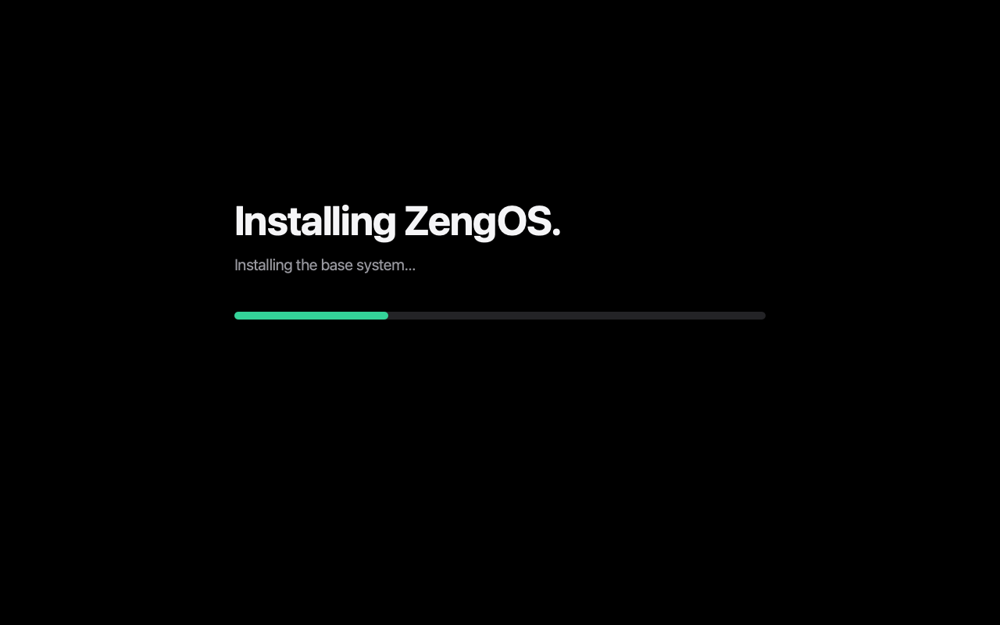

ZengOS
The desktop, a terminal, files, a browser, and viewers for pictures and video. Ready on first boot.
ZengOS is an operating system built on Arch Linux. A new desktop, an installer you will actually enjoy, and nothing you did not ask for.

Zero bloat is a rule, not a slogan. If it is not on the list, it is not on your disk.
The desktop, a terminal, files, a browser, and viewers for pictures and video. Ready on first boot.
The desktop and a terminal. Everything else is one command away, when you want it.
0 packages you chose, plus the Linux kernel and firmware.
Not another KDE skin and not another tiling window manager. Zolt is a small, calm desktop: a bar across the top, a dock that grows under your pointer, and a launcher on Super + Space.
It runs on labwc, a light Wayland compositor, with the shell written in QML. Windows snap to the edges with Super and the arrow keys. There is no Hyprland and no background service you did not start.
Try the dock
Big type. Clear buttons. One decision per screen, and no jargon. Your disk is never touched until you press Install.



Antivirus with two commands: scan everything, or check a path. No tray icon, no background process, no telemetry.
The Zeng family of apps, installed alongside the system if you choose it in the installer.
Looking for the earlier ZoltOS and ZengOS previews? They are still online in the archive. They are older, different builds.
Everything is open source. You do not need a virtual machine: GitHub builds the ISO for you in an Arch Linux container. Or build it on any x86_64 Arch machine.
git clone https://github.com/SirCreativeZHLM/ZengOS
cd ZengOS
sudo iso/build.sh normal # or: mini